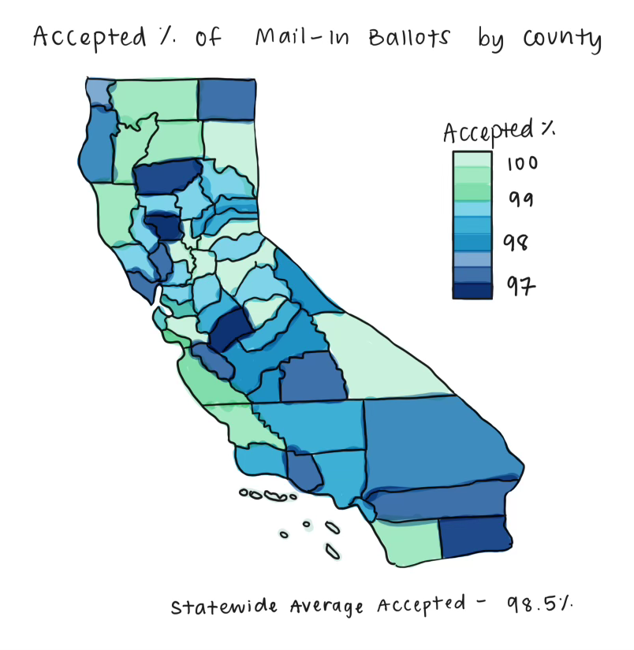
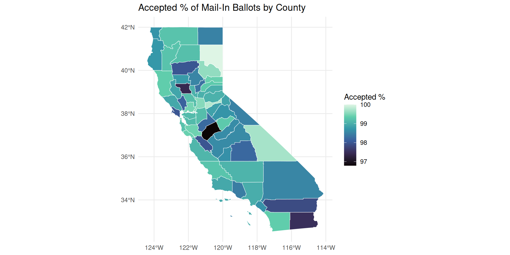
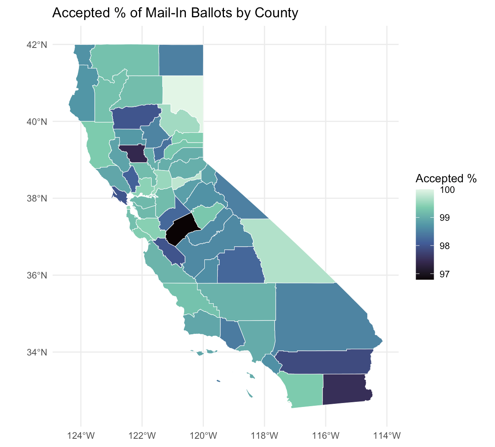

library(tidyverse)
library(janitor)
library(ggplot2)
library(dplyr)
library(sf)
vbm <- read.csv("ballot-return-stats.csv") |>
slice(-(1:2)) |>
row_to_names(row_number = 1) |>
clean_names() |>
mutate(
accepted_percent_of_voter_returned_ballots = str_remove(accepted_percent_of_voter_returned_ballots, "%"),
accepted_percent_of_voter_returned_ballots = as.numeric(accepted_percent_of_voter_returned_ballots)
)
vbmProject: Gerrymandering
Analyzing Prop 50 and Spatial Voting Data in California
Agenda
Warmup + Recap
Project Overview (Prop 50 and precinct changes)
Core Concepts
Time to work on project in groups
Warmup Activity
Goal
We’ll warm up by looking at Vote by Mail (VBM) data across California counties.
Each county has counts of ballots returned, accepted, and rejected, and we’ll practice visualing those and getting insights.
Warm Up Instructions
In groups of 2-3, recreate this map and make a summary statistic with R code
- Use familar dplyr, ggplot2, and sf packages
- Use the vbm dataset found in your project repositories

Warm Up
Let’s go over it together:
Sketch: A choropleth map of California shaded by Accepted % of Voter-returned Ballots.
Summary statistic: mean accepted % of Mail-In Ballots
county
2 Alameda
3 Alpine
4 Amador
5 Butte
6 Calaveras
7 Colusa
8 Contra Costa
9 Del Norte
10 El Dorado
11 Fresno
12 Glenn
13 Humboldt
14 Imperial
15 Inyo
16 Kern
17 Kings
18 Lake
19 Lassen
20 Los Angeles
21 Madera
22 Marin
23 Mariposa
24 Mendocino
25 Merced
26 Modoc
27 Mono
28 Monterey
29 Napa
30 Nevada
31 Orange
32 Placer
33 Plumas
34 Riverside
35 Sacramento
36 San Benito
37 San Bernardino
38 San Diego
39 San Francisco
40 San Joaquin
41 San Luis Obispo
42 San Mateo
43 Santa Barbara
44 Santa Clara
45 Santa Cruz
46 Shasta
47 Sierra
48 Siskiyou
49 Solano
50 Sonoma
51 Stanislaus
52 Sutter
53 Tehama
54 Trinity
55 Tulare
56 Tuolumne
57 Ventura
58 Yolo
59 Yuba
60 Total
61 Statistics included in this report are as of a specific date and time and are derived from data provided to VoteCal from each of California’s 58 counties. The Secretary of State continually works with each of California’s counties to provide accuracy.
county_type total_voters_issued_vbm_ballots drop_box
2 VCA County 973,594 61,689
3 All Mail 938 88
4 VCA County 27,453 3,867
5 VCA County 129,293 10,540
6 VCA County 33,812 3,116
7 All Mail 11,059 726
8 Polling Place 735,408 44,565
9 Polling Place 15,717 38
10 VCA County 139,574 11,121
11 VCA County 535,548 22,935
12 Polling Place 14,415 1,136
13 VCA County 87,313 4,120
14 Polling Place 95,456 1,636
15 Polling Place 11,082 587
16 Polling Place 468,949 10,549
17 VCA County 58,871 5,016
18 Polling Place 39,008 1,032
19 Polling Place 15,285 1,271
20 VCA County 5,879,677 286,957
21 VCA County 82,765 6,252
22 VCA County 176,020 10,448
23 VCA County 12,186 2,008
24 Polling Place 54,432 2,272
25 VCA County 137,873 5,225
26 Polling Place 5,408 333
27 Polling Place 8,111 488
28 Polling Place 221,738 9,970
29 VCA County 87,069 5,778
30 VCA County 78,525 9,088
31 VCA County 1,919,313 110,621
32 VCA County 301,356 26,031
33 All Mail 13,777 1,168
34 VCA County 1,438,783 7,345
35 VCA County 927,438 46,980
36 VCA County 39,795 2,336
37 Polling Place 1,253,526 21,818
38 VCA County 2,027,579 96,140
39 Polling Place 535,748 16,364
40 Polling Place 406,475 11,317
41 Polling Place 184,511 8,646
42 VCA County 450,416 28,675
43 Polling Place 252,673 19,892
44 VCA County 1,074,465 59,033
45 VCA County 173,641 14,385
46 Polling Place 117,583 6,823
47 All Mail 2,237 0
48 Polling Place 28,901 1,175
49 Polling Place 281,959 3
50 VCA County 322,412 25,095
51 VCA County 303,940 12,464
52 Polling Place 56,014 2,941
53 Polling Place 38,195 2,695
54 Polling Place 7,748 597
55 Polling Place 226,427 7,046
56 VCA County 36,777 3,734
57 VCA County 535,032 39,667
58 VCA County 125,125 158
59 Polling Place 46,522 2,690
60 \t23,264,947 \t1,098,690
61
drop_off_location vote_center_drop_off mail fax other
2 341 0 127,943 256 0
3 1 0 177 0 0
4 0 0 5,670 5 0
5 780 0 22,740 217 0
6 375 4 6,343 1 0
7 271 0 1,660 1 0
8 561 0 126,635 82 0
9 1,159 0 2,742 0 0
10 1,813 0 25,247 17 0
11 0 1,863 58,789 53 0
12 63 0 1,873 0 0
13 1,204 0 14,718 13 0
14 284 1 6,250 0 0
15 51 0 2,280 1 0
16 2,576 0 49,441 32 0
17 335 203 6,211 1 0
18 556 0 7,234 10 0
19 622 0 2,395 0 0
20 0 0 569,477 830 0
21 0 319 10,546 9 0
22 13 0 44,240 125 0
23 1 0 1,398 1 0
24 2,367 0 9,201 22 0
25 470 45 15,777 8 0
26 221 0 1,034 0 1
27 20 0 1,349 3 0
28 103 0 36,932 83 0
29 0 1,178 15,783 22 0
30 0 0 11,468 15 0
31 1,935 0 299,696 258 0
32 1,114 229 57,066 53 0
33 169 0 3,485 1 0
34 29,707 0 235,923 0 0
35 0 2 156,446 96 0
36 2 287 3,423 6 0
37 5,895 0 154,208 62 0
38 0 662 417,349 362 0
39 1,448 0 89,822 381 0
40 575 0 54,197 0 0
41 2,288 0 47,802 56 0
42 3 1,119 89,934 144 0
43 680 0 31,727 267 0
44 0 505 132,443 212 0
45 1,186 0 29,581 79 0
46 545 0 12,901 10 0
47 42 0 774 1 0
48 286 0 6,696 3 0
49 6,337 0 44,478 31 4
50 2,936 0 63,487 100 0
51 690 75 40,329 17 0
52 843 0 7,292 2 0
53 39 0 6,597 4 0
54 110 0 1,489 3 0
55 306 0 26,391 9 0
56 780 0 6,672 6 0
57 649 0 62,917 91 4
58 0 0 29,473 102 0
59 213 0 5,484 3 0
60 \t72,965 \t6,492 \t3,303,635 \t4,166 \t9
61
total_returned_vbm_ballots total_accepted_vbm_ballots
2 190,229 188,602
3 266 263
4 9,542 9,519
5 34,277 33,770
6 9,839 9,725
7 2,658 2,589
8 171,843 170,366
9 3,939 3,887
10 38,198 37,826
11 83,640 82,453
12 3,072 3,034
13 20,055 19,800
14 8,171 7,967
15 2,919 2,910
16 62,598 62,011
17 11,766 11,606
18 8,832 8,733
19 4,288 4,288
20 857,264 848,507
21 17,126 16,887
22 54,826 53,724
23 3,408 3,384
24 13,862 13,772
25 21,525 20,834
26 1,589 1,565
27 1,860 1,832
28 47,088 46,657
29 22,761 22,336
30 20,571 20,430
31 412,510 406,984
32 84,493 83,659
33 4,823 4,803
34 272,975 267,121
35 203,524 202,560
36 6,054 5,932
37 181,983 179,301
38 514,513 511,168
39 108,015 107,481
40 66,089 65,545
41 58,792 58,343
42 119,875 118,939
43 52,566 51,997
44 192,193 191,086
45 45,231 44,953
46 20,279 20,115
47 817 812
48 8,160 8,097
49 50,853 50,574
50 91,618 90,625
51 53,575 52,620
52 11,078 10,970
53 9,335 9,147
54 2,199 2,182
55 33,752 33,145
56 11,192 11,044
57 103,328 101,705
58 29,733 29,488
59 8,390 8,248
60 \t4,485,957 \t4,437,921
61
total_vbm_ballots_in_review accepted_percent_of_voter_returned_ballots
2 0 99.14
3 0 98.87
4 0 99.76
5 0 98.52
6 5 98.84
7 3 97.40
8 173 99.14
9 0 98.68
10 98 99.03
11 0 98.58
12 0 98.76
13 2 98.73
14 0 97.50
15 0 99.69
16 14 99.06
17 1 98.64
18 1 98.88
19 0 100.00
20 1,614 98.98
21 107 98.60
22 801 97.99
23 0 99.30
24 0 99.35
25 569 96.79
26 0 98.49
27 0 98.49
28 3 99.08
29 328 98.13
30 10 99.31
31 402 98.66
32 81 99.01
33 0 99.59
34 721 97.86
35 0 99.53
36 0 97.98
37 554 98.53
38 37 99.35
39 25 99.51
40 86 99.18
41 355 99.24
42 513 99.22
43 0 98.92
44 1 99.42
45 232 99.39
46 0 99.19
47 0 99.39
48 0 99.23
49 4 99.45
50 273 98.92
51 500 98.22
52 0 99.03
53 180 97.99
54 0 99.23
55 115 98.20
56 0 98.68
57 818 98.43
58 0 99.18
59 2 98.31
60 \t8,628 98.93
61 NA
regular_ballots provisional_ballots_non_cvr conditional_cvr
2 525 0 0
3 0 0 0
4 0 0 0
5 0 0 0
6 142 0 1
7 0 0 0
8 224 0 0
9 0 0 0
10 77 0 0
11 719 0 0
12 0 0 0
13 203 0 11
14 7 0 0
15 0 0 0
16 0 0 0
17 48 0 0
18 0 0 0
19 0 0 0
20 13,458 0 0
21 111 0 0
22 71 0 13
23 0 0 0
24 0 0 0
25 0 0 0
26 0 0 0
27 0 0 0
28 90 0 0
29 129 0 8
30 341 1 11
31 3,280 0 0
32 1,648 0 10
33 0 0 0
34 1,429 0 0
35 345 0 8
36 107 0 0
37 0 6 17
38 824 0 0
39 0 0 2
40 63 0 0
41 0 0 0
42 792 0 0
43 0 0 8
44 1,145 0 0
45 368 0 3
46 34 0 0
47 0 0 0
48 0 0 0
49 4 0 0
50 360 0 0
51 130 0 0
52 16 0 0
53 0 0 0
54 0 0 0
55 12 0 1
56 10 0 0
57 708 0 0
58 82 0 0
59 0 0 0
60 27,502 7 93
61
conditional_instant_cvr total_cast_in_person_ballots
2 0 525
3 0 0
4 0 0
5 0 0
6 2 145
7 1 1
8 0 224
9 0 0
10 2 79
11 16 735
12 0 0
13 0 214
14 0 7
15 0 0
16 0 0
17 4 52
18 0 0
19 0 0
20 0 13,458
21 2 113
22 0 84
23 0 0
24 0 0
25 0 0
26 0 0
27 0 0
28 0 90
29 0 137
30 0 353
31 0 3,280
32 1 1,659
33 0 0
34 0 1,429
35 10 363
36 6 113
37 0 23
38 0 824
39 0 2
40 0 63
41 0 0
42 2 794
43 0 8
44 0 1,145
45 7 378
46 0 34
47 0 0
48 0 0
49 0 4
50 13 373
51 0 130
52 0 16
53 0 0
54 0 0
55 1 14
56 0 10
57 20 728
58 1 83
59 0 0
60 88 27,690
61
total_accepted_in_person_ballots total_in_person_ballots_in_review
2 525 0
3 0 0
4 0 0
5 0 0
6 144 1
7 1 0
8 224 0
9 0 0
10 79 0
11 735 0
12 0 0
13 211 3
14 7 0
15 0 0
16 0 0
17 52 0
18 0 0
19 0 0
20 13,458 0
21 113 0
22 84 0
23 0 0
24 0 0
25 0 0
26 0 0
27 0 0
28 90 0
29 129 8
30 341 11
31 3,280 0
32 1,649 10
33 0 0
34 1,429 0
35 363 0
36 113 0
37 17 6
38 824 0
39 2 0
40 63 0
41 0 0
42 794 0
43 0 8
44 1,145 0
45 375 3
46 34 0
47 0 0
48 0 0
49 4 0
50 373 0
51 130 0
52 16 0
53 0 0
54 0 0
55 13 1
56 10 0
57 728 0
58 83 0
59 0 0
60 27,638 51
61
accepted_percent_of_registration total_ballots_cast na na_2 na_3 na_4 na_5
2 0.05% 190,754 NA NA NA NA NA
3 0.00% 266 NA NA NA NA NA
4 0.00% 9,542 NA NA NA NA NA
5 0.00% 34,277 NA NA NA NA NA
6 0.43% 9,984 NA NA NA NA NA
7 0.01% 2,659 NA NA NA NA NA
8 0.03% 172,067 NA NA NA NA NA
9 0.00% 3,939 NA NA NA NA NA
10 0.06% 38,277 NA NA NA NA NA
11 0.14% 84,375 NA NA NA NA NA
12 0.00% 3,072 NA NA NA NA NA
13 0.24% 20,269 NA NA NA NA NA
14 0.01% 8,178 NA NA NA NA NA
15 0.00% 2,919 NA NA NA NA NA
16 0.00% 62,598 NA NA NA NA NA
17 0.09% 11,818 NA NA NA NA NA
18 0.00% 8,832 NA NA NA NA NA
19 0.00% 4,288 NA NA NA NA NA
20 0.23% 870,722 NA NA NA NA NA
21 0.14% 17,239 NA NA NA NA NA
22 0.05% 54,910 NA NA NA NA NA
23 0.00% 3,408 NA NA NA NA NA
24 0.00% 13,862 NA NA NA NA NA
25 0.00% 21,525 NA NA NA NA NA
26 0.00% 1,589 NA NA NA NA NA
27 0.00% 1,860 NA NA NA NA NA
28 0.04% 47,178 NA NA NA NA NA
29 0.15% 22,898 NA NA NA NA NA
30 0.44% 20,924 NA NA NA NA NA
31 0.17% 415,790 NA NA NA NA NA
32 0.55% 86,152 NA NA NA NA NA
33 0.00% 4,823 NA NA NA NA NA
34 0.10% 274,404 NA NA NA NA NA
35 0.04% 203,887 NA NA NA NA NA
36 0.29% 6,167 NA NA NA NA NA
37 0.00% 182,006 NA NA NA NA NA
38 0.04% 515,337 NA NA NA NA NA
39 0.00% 108,017 NA NA NA NA NA
40 0.02% 66,152 NA NA NA NA NA
41 0.00% 58,792 NA NA NA NA NA
42 0.18% 120,669 NA NA NA NA NA
43 0.00% 52,574 NA NA NA NA NA
44 0.11% 193,338 NA NA NA NA NA
45 0.22% 45,609 NA NA NA NA NA
46 0.03% 20,313 NA NA NA NA NA
47 0.00% 817 NA NA NA NA NA
48 0.00% 8,160 NA NA NA NA NA
49 0.00% 50,857 NA NA NA NA NA
50 0.12% 91,991 NA NA NA NA NA
51 0.04% 53,705 NA NA NA NA NA
52 0.03% 11,094 NA NA NA NA NA
53 0.00% 9,335 NA NA NA NA NA
54 0.00% 2,199 NA NA NA NA NA
55 0.01% 33,766 NA NA NA NA NA
56 0.03% 11,202 NA NA NA NA NA
57 0.14% 104,056 NA NA NA NA NA
58 0.07% 29,816 NA NA NA NA NA
59 0.00% 8,390 NA NA NA NA NA
60 0.12% \t4,513,647 NA NA NA NA NA
61 NA NA NA NA NA
na_6
2 NA
3 NA
4 NA
5 NA
6 NA
7 NA
8 NA
9 NA
10 NA
11 NA
12 NA
13 NA
14 NA
15 NA
16 NA
17 NA
18 NA
19 NA
20 NA
21 NA
22 NA
23 NA
24 NA
25 NA
26 NA
27 NA
28 NA
29 NA
30 NA
31 NA
32 NA
33 NA
34 NA
35 NA
36 NA
37 NA
38 NA
39 NA
40 NA
41 NA
42 NA
43 NA
44 NA
45 NA
46 NA
47 NA
48 NA
49 NA
50 NA
51 NA
52 NA
53 NA
54 NA
55 NA
56 NA
57 NA
58 NA
59 NA
60 NA
61 NAWarm Up
# getting CA counties shapefile (from built-in naturalearth data)
ca_sf <- st_read("https://raw.githubusercontent.com/codeforamerica/click_that_hood/master/public/data/california-counties.geojson", quiet = TRUE)
# prepping data
vbm_summary <- vbm |>
mutate(county = tolower(county)) |>
group_by(county) |>
summarise(accept_rate = accepted_percent_of_voter_returned_ballots)
vbm_summary# A tibble: 60 × 2
county accept_rate
<chr> <dbl>
1 alameda 99.1
2 alpine 98.9
3 amador 99.8
4 butte 98.5
5 calaveras 98.8
6 colusa 97.4
7 contra costa 99.1
8 del norte 98.7
9 el dorado 99.0
10 fresno 98.6
# ℹ 50 more rows# joining shapefile to the data
ca_joined <- ca_sf |>
mutate(county = tolower(name)) |>
left_join(vbm_summary, by = "county")
# plot
ggplot(ca_joined) +
geom_sf(aes(fill = accept_rate), color = "white", size = 0.2) +
scale_fill_viridis_c(option = "mako", name = "Accepted %") +
theme_minimal() +
labs(
title = "Accepted % of Mail-In Ballots by County"
)
Warm Up - Final Product

Key Concepts: Shapefiles & Joins
Shapefiles
Store geographic boundaries (counties, precincts, districts)
Can be loaded in R using sf::st_read()
Example:
ca_precincts <- st_read(“data/CA_precincts.shp”)
Key Concepts: Shapefiles & Joins
Combine spatial and tabular data
Use left_join() for county-level merges
Use st_join() for geographic (spatial) merges
Why We Need These
To connect:
- Election data (Prop 50 voting outcomes, precinct changes)
- Census data (demographics, income, race, age, education)
So we can quantify who is affected when district boundaries are redrawn.
Project Overview
What is Prop 50?
A California ballot measure proposing a new congressional district map that shifts precinct boundaries across counties.
The purpose is to reconfigure districts, which may alter partisan balance in certain areas.
Key point: Prop 50 affects which precincts belong to which districts, not just election outcomes.
Our project will analyze how precincts are reassigned and which areas are impacted.
Research Question
Will adoption of a new district map lead to an increase in partisan advantage? If so, by how much?
We’ll investigate which precincts are moved to new districts:
Identify precincts that change districts using sf::st_join() or sf::st_intersects()
Compare old vs new shapefiles to see precinct reassignments
Data Sources
Election Data: CA Secretary of State (new vs old shapefiles)
Census Data: U.S. Census Bureau (ACS 5-year estimates)
Shapefiles:
County & precinct boundaries (sf format)
Proposed Prop 50 district maps
Next Steps
Clean the data files for each source. Merge Prop 50 boundary data with 2024 precinct shapefiles
Overlay 2020–2024 census demographic data
Compare demographics of precincts remaining vs moved
Visualize demographic disparities on an interactive map
Key Deliverables
A choropleth map of precinct shifts
A table summarizing demographic differences
A short report interpreting findings in policy terms